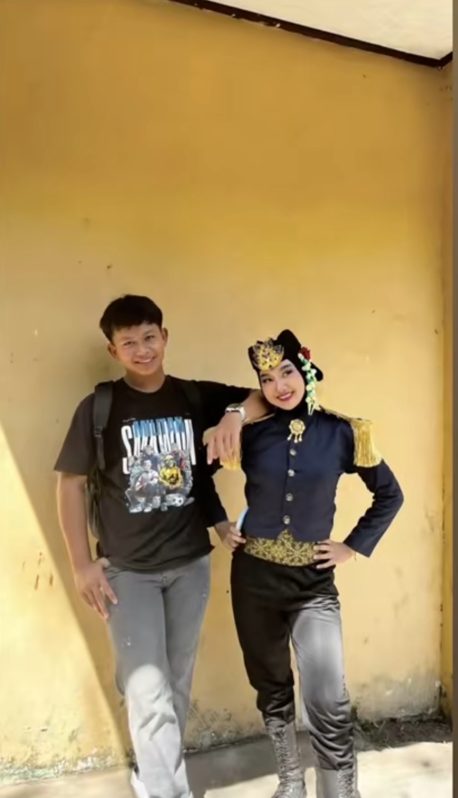

★ ✦ ★
Buku Kenangan
Geser ke kanan untuk membuka →
★ ★ ★
🌸

Foto 1

Foto 2
✦ ✦

Foto 3

Foto 4
🌺

Foto 5

Foto 6
★ ✦ ★

Foto 7

Foto 8
🌸
✦ ✦ ✦

Foto 11

Foto 12
💍
★ ★ ★

Foto 13

Foto 14
Made with love — for us
✨

Foto 15

Foto 16
Pesan Buat Kamu
[Ini adalah contoh teks rahasia yang bisa kamu ubah]
Halo gimana kabarnya? baik kan hahaa, ini hadiah dari aku buat kamu. Aku mau ngucapin banyaa banyaa makasih sama kamu uda di kasih kesempatann bisa deket sama kamu.
Semoga sehat terus dahh semangat sekolahnya, ohh iya akhirnya wishlist kamu terwujud, jangan lupa bahagia selalu ya.
Tetep semangat latihan nya yaa banggain mama jangan telat maemm jangan nakal nakal aku doain yang terbaik buat kamu semoga lancar terus.
Halo gimana kabarnya? baik kan hahaa, ini hadiah dari aku buat kamu. Aku mau ngucapin banyaa banyaa makasih sama kamu uda di kasih kesempatann bisa deket sama kamu.
Semoga sehat terus dahh semangat sekolahnya, ohh iya akhirnya wishlist kamu terwujud, jangan lupa bahagia selalu ya.
Tetep semangat latihan nya yaa banggain mama jangan telat maemm jangan nakal nakal aku doain yang terbaik buat kamu semoga lancar terus.
...lanjutan 🌸
Aku agak kecewa sama kamu sih soalnya ga jujur dan ga terus terang apa adanya, di tanyain deket bilangnya ngga itu yang buat aku ambigu harus ambil keputusan gimana, yang katanya cuma temen eh deket nya ternyata dia juga ga nyangka aja sih.
tapi yaudah lah gapapa itu pilihannya kamu, aku juga udaa ngasih effort yang terbaik buat kamu pas deket dan ya akhirnya aku punya alasan buat meng ikhlaskan kamu. makasih banya yaaa sehat terus sekali lagi jangan telat maemm
tapi yaudah lah gapapa itu pilihannya kamu, aku juga udaa ngasih effort yang terbaik buat kamu pas deket dan ya akhirnya aku punya alasan buat meng ikhlaskan kamu. makasih banya yaaa sehat terus sekali lagi jangan telat maemm
Terima Kasih 💖
ini halaman terakhir dari scrapbook ini, makasih udah mau scroll sampe sini hehee.
semoga kamu selalu bahagia, sehat, dan sukses di apapun yang kamu kejar. kamu itu orang yang spesial, dan aku bersyukur banget pernah kenal kamu.
semangat terus yaa, SEMANGATTT SEMANGATTTT
semoga kamu selalu bahagia, sehat, dan sukses di apapun yang kamu kejar. kamu itu orang yang spesial, dan aku bersyukur banget pernah kenal kamu.
semangat terus yaa, SEMANGATTT SEMANGATTTT
~ The End ~
✦ ✦ ✦
Selesai
